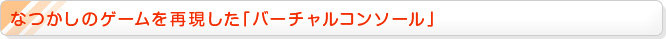
『ニンテンドーeショップ』でダウンロードできる「バーチャルコンソール」は、ゲームボーイやゲームボーイカラーのなつかしのゲームを、まるで当時のハードでプレイしているかのような感覚でプレイできるシリーズです。
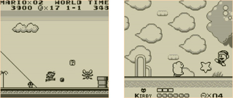
『スーパーマリオランド』や『星のカービィ』をはじめ、さまざまなゲームが配信されています。なつかしいゲームを遊びたくなったら、すぐにダウンロードして楽しむことができるのです。
通常はニンテンドー3DSの画面の大きさに合わせて拡大表示されますが、HOMEメニュー画面でスタートまたはセレクトボタンを押しながらタッチしてはじめると、ゲームボーイ本体のフレームを3Dで再現できます。また、プレイ中にLとRボタンを同時に押しながらYボタンを押すと、初代ゲームボーイ風の画面になります。
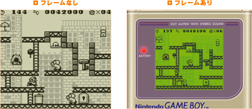
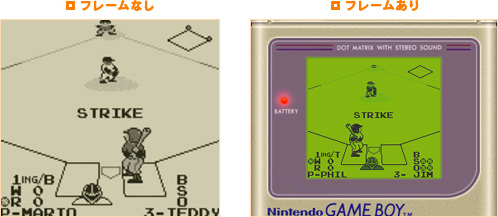
ゲームボーイ用ソフトだった『ドンキーコング』や『ベースボール』などで試してみると、ゲームボーイ独特のちょっと緑がかったモノクロの液晶の色味まで再現することができます。
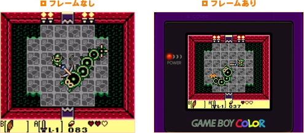
一方で『ゼルダの伝説 夢をみる島DX』も、やはりゲームボーイカラーそのままの色が再現されています。当時のハードを持っていなくても、ニンテンドー3DSさえあれば、ソフトのカードも不要で、いつでも遊べてしまうのです。
ちなみに「バーチャルコンソール」プレイ中の下画面では、セーブ機能がなかったゲームでも「まるごと保存」ができるようになっています。また、ニンテンドー3DSのHOMEメニューでソフトのアイコンを選んだ画面から、詳細な説明書を見ることができます。ゲーム攻略情報が書かれていることもあります。
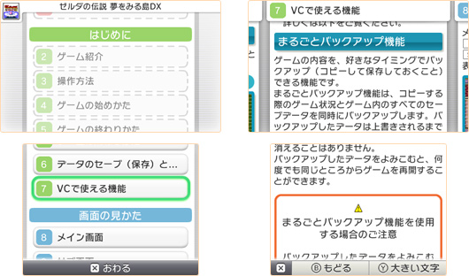
「バーチャルコンソール」シリーズは、ゲームの面白さはそのままに、より遊びやすくなる機能もついて、お手頃な価格になっています。当時はお小遣いが足りなくて買えなかったゲームを見つけたら、ぜひダウンロードして楽しんでみてください。
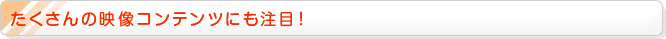
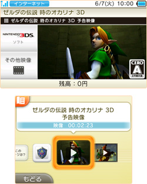
『ニンテンドーeショップ』では、ゲームのテレビCMやプレイ動画などをはじめ、さまざまな映像コンテンツが配信されています。映像コンテンツは、メニューページやソフト情報ページのアイコンをタッチするだけで、すぐに再生することができます。
特に注目したいのは、ニンテンドー3DSならではの3D映像です。ニンテンドー3DSソフトのプレイ動画などを、まるでそのソフトをプレイしているような感覚で見ることができます。
今回のN.O.Mでもご紹介した『3Dクラシックス エキサイトバイク』や『3Dクラシックス ゼビウス』に有野さんが挑戦する『ゲームセンターCX 有野の挑戦 特別版』は、3Dで見ることができるので、必見です。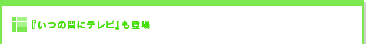
『ニンテンドーeショップ』で配信されている無料ソフト『いつの間にテレビ』をダウンロードすれば、「いつの間に通信」を利用して毎日新しい3Dの映像を受信して楽しむことができます。
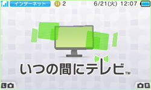
ニンテンドー3DSの電源を入れ、インターネット接続したまま、フタを閉じてスリープ状態にしておきます。これだけで、日本テレビ制作／フジテレビ制作の新しい映像を毎日それぞれ3本ずつ、いつの間にか受信してくれます。
ゲームの合間の休憩時間や、お出かけの際にちょっと時間が空いたときなど、気軽に映像を楽しむことができるのです。
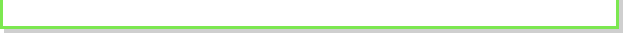